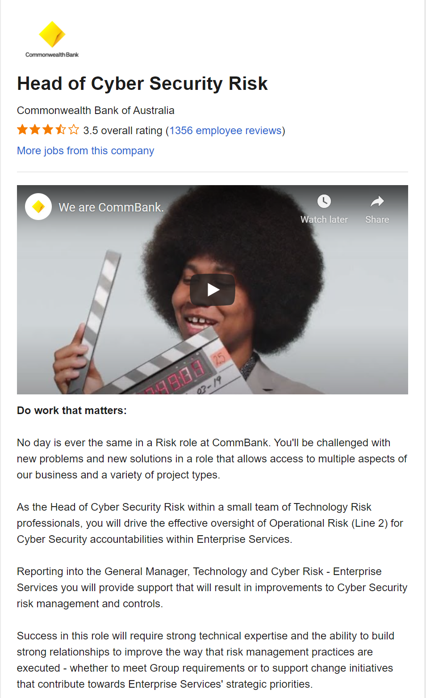

Being a leader of a team and managing the overall development and delivery of
advice over risk and compliance management within the Cyber Security team.
Further responsibilities include; assessing technology risk management in relation
to business goals, assuring tests are run routinely to maintain cyber security
protocols and working closely with senior management to develop an overall
picture as to how cyber risk management will assist the company achieve bottom
line goals.

What Appeals To Me About This Job?
What appeals to me about this job is the multifaceted nature of the role. It requires
you to use your extensive knowledge on cyber risks and vulnerabilities and experience
you have gathered over the years in the workforce and utilise them to direct, advise and
strategize a strong cybersecurity risk framework for the company to help reach organizational
goals. To me, as someone who wants to develop into a leader and become a manager this role
is a personal goal for me to reach.
Required Skills & Qualifications
- Relevant tertiary qualifications (BComSci, BCom)
- Professional certification (CISM, CRISC)
- Leadership experience in the IT field
- Knowledge of applicable industry standards and frameworks
- Knowledge of Bash, Linux and Windows administration
Current Skills & Qualifications
- Knowledge of Bash, Linux and Windows administration
Career Plan
- Complete bachelor's degree in I.T
- Gain experience and build connections through Internships in cyber risk at major
and small companies
- Begin full time work as a cyber risk analyst
- Gain leadership experience by leading projects and small teams
- Complete security+ certification
- Always keep up to date with relevant news and current affairs
{kind=link}